01 / ELECTRONICS ⌁
ESP32-S3
Electronics &
embedded systems.
From breadboard prototypes to custom PCBs, microcontrollers, peripheral integration and firmware experiments.
Explore hardware lab ↗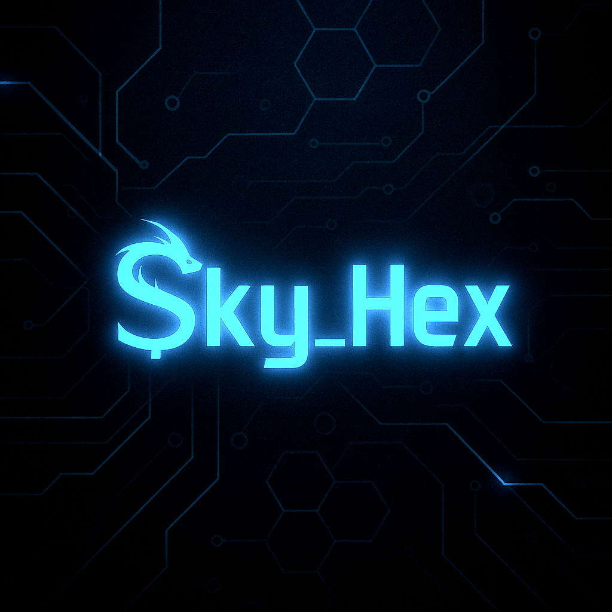
SKY_HEXINDEPENDENT PROJECTSENGINEERING / DEVELOPMENT / EXPERIMENTATION SH—001
I turn curiosity into working systems. From custom electronics and software to self-hosted infrastructure and aerospace concepts, this is where ideas meet engineering.
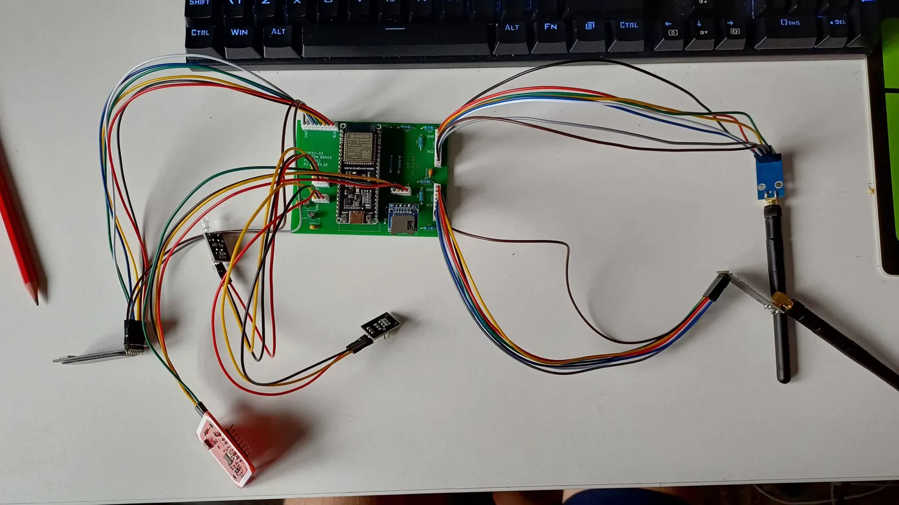
FIG 01 / CUSTOM HARDWARE / V1NOT JUST IDEAS. IMPLEMENTATION.
Research, design, build, troubleshoot, document. Every project is an opportunity to understand a system properly — and make it better.
The studio approach ↗02 / WHAT I WORK ON
One person, working across a range of technical interests. Different disciplines, one consistent approach: understand the problem, engineer a solution, validate the result.
From breadboard prototypes to custom PCBs, microcontrollers, peripheral integration and firmware experiments.
Explore hardware lab ↗Practical scripting, web development, monitoring tools and integrations that connect services and make systems easier to operate.
View software projects ↗Linux-based hosting, web services, game servers, monitoring, networking, deployment and service reliability.
View live infrastructure ↗Flight training, aviation systems interest and an emerging VTOL UAV competition concept exploring integrated engineering.
Explore aerospace concept ↗SKY_HEX INTEGRATIONS / SUBSCRIPTIONS
Explore Bronze, Silver and Gold plans for Discord integrations, server monitoring and automation. Find the option that fits your setup.
See plans ↗03 / SELECTED WORK
A closer look at selected builds, live systems and concepts. Each project is presented honestly — including what works, what is being tested and what comes next.
Custom Bruce device / ESP32-S3 platform
A purpose-built two-layer PCB designed in KiCad to move a Bruce-based ESP32-S3 project beyond breadboard wiring and into a modular hardware platform.
The board brings together JST-connected peripherals including CC1101, nRF24L01 PA/LNA, PN532 NFC, microSD, GPS, display and IR hardware. The design has been manufactured and through-hole assembled; connected modules are undergoing initial testing. Physical buttons and final integration remain outstanding.
Linux VPS operations, Apache hosting, multiplayer servers, service monitoring and a public status interface. Includes public-facing status feeds, player telemetry, automated checks and operational dashboards for self-hosted services.
Inspect infrastructure ↗An emerging competition concept exploring how airframe design, embedded electronics, sensing, flight-control software and systems integration could come together in a vertical-take-off-and-landing aircraft.
An early teaser — not a completed or flight-tested aircraft.
Let's explore what can be built.
sky.hexbusiness@gmail.com04 / HARDWARE LAB
The workbench documents the full development path: initial breadboard experiments, schematic and PCB design, manufactured hardware, assembly and testing.
A modular ESP32-S3 board designed to bring several peripherals together in a single, maintainable platform.
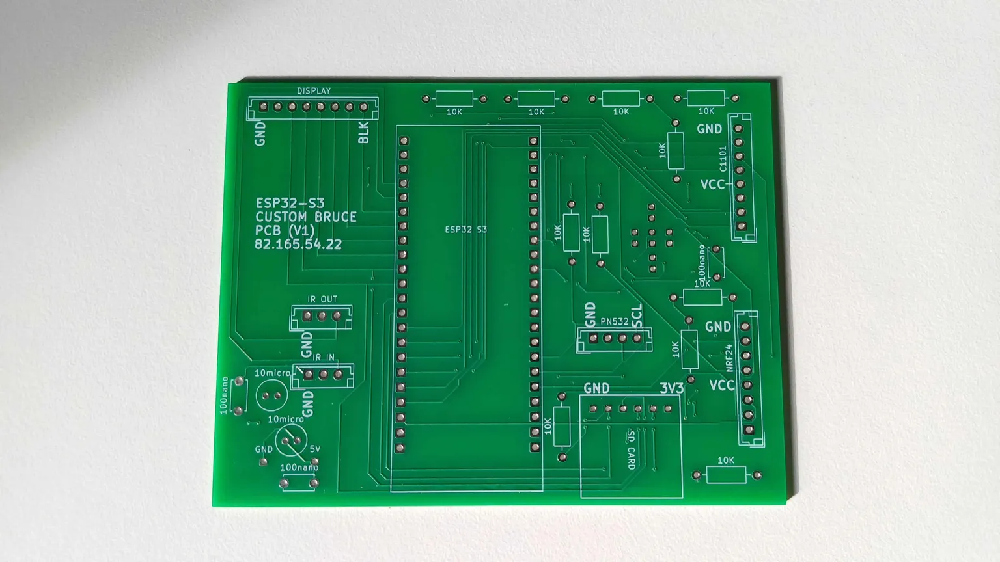
FIG 02 / MANUFACTURED PCBDEVELOPMENT RECORD
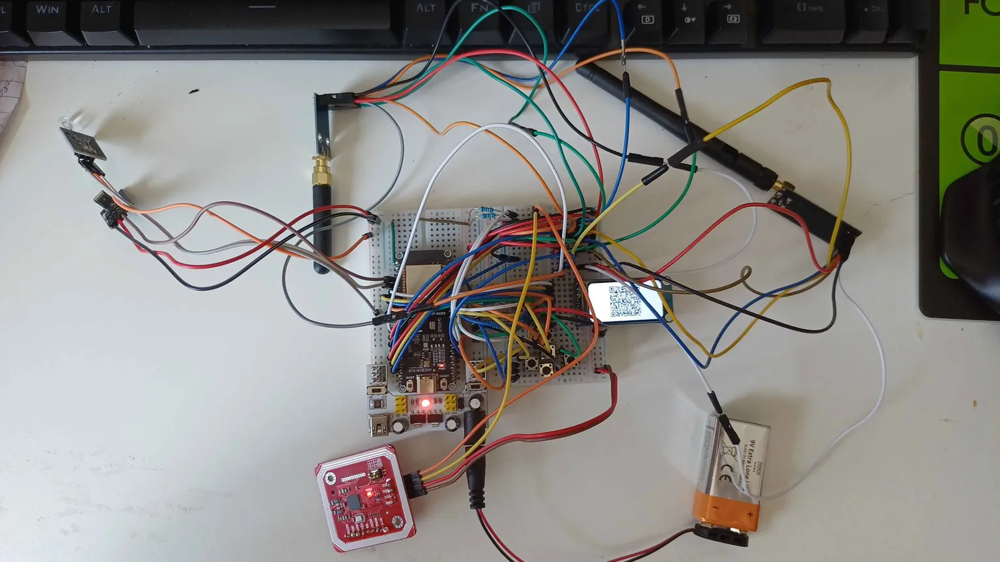
PROTOTYPE / 21 JUNEInitial module, wiring and interface experiments established the prototype before a custom PCB was designed.
PROOF OF CONCEPT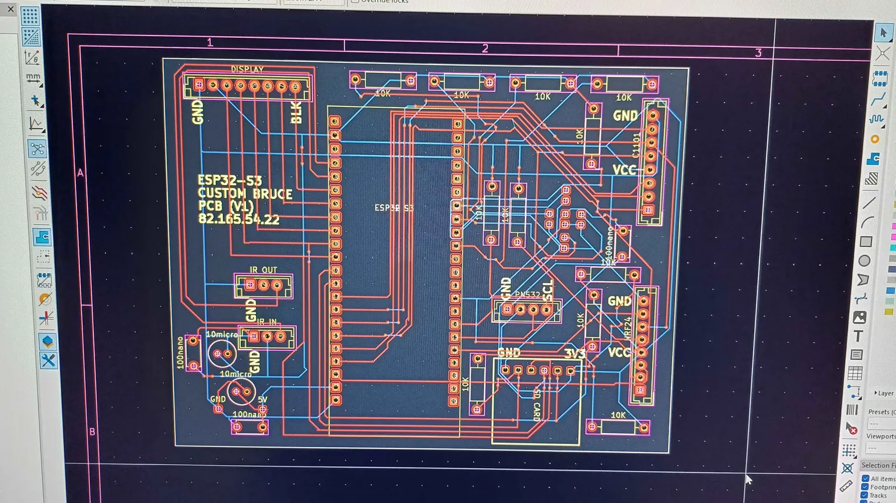
DESIGN / 18 SEPTEMBERKiCad design work routed the ESP32-S3 platform, connectors, passive components and power connections into a two-layer board.
DESIGN COMPLETE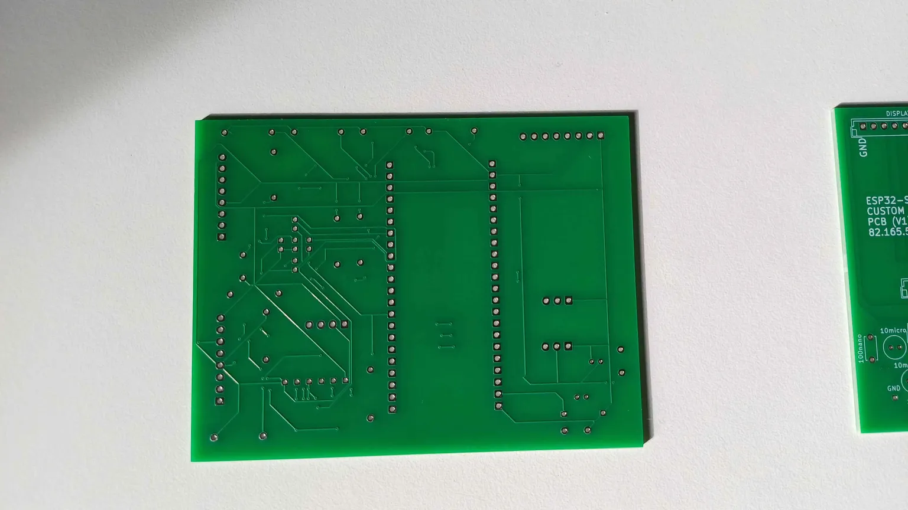
MANUFACTURE / 28 SEPTEMBERThe green two-layer PCB arrived with component outlines, labels and through-hole pads ready for assembly.
PCB MANUFACTURED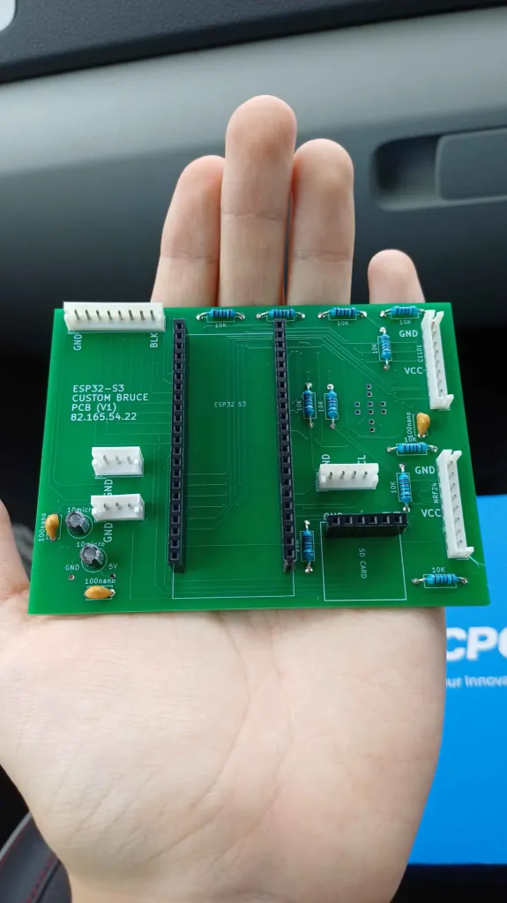
ASSEMBLY / 05 OCTOBERResistors, capacitors, headers and JST connectors were soldered. Multimeter checks followed before connecting modules.
ASSEMBLEDThe ESP32-S3 and peripheral modules were connected for initial tests. Physical buttons and remaining integration work are still pending.
MODULE INTEGRATION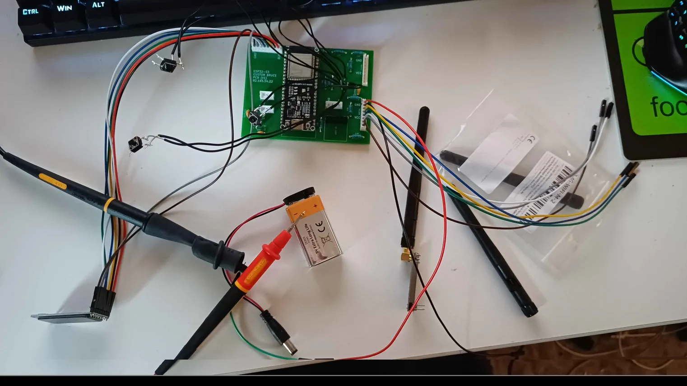
DIAGNOSTICS / 16 OCTOBERThe nRF24 module was not transmitting. This stage documents the fault investigation and keeps the issue visible in the build log; successful operation is not yet claimed.
INVESTIGATION IN PROGRESS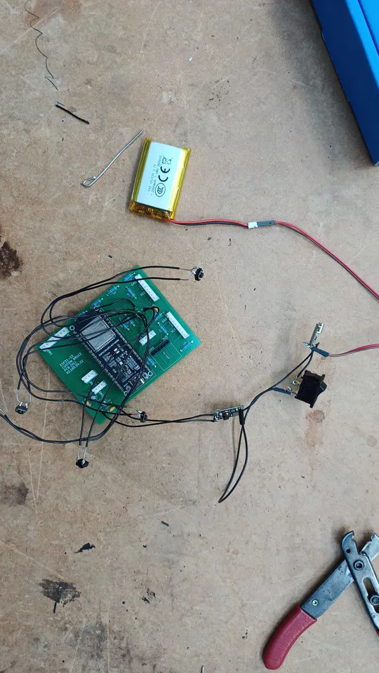
HARDWARE UPDATE / 23 OCTOBERA battery has been added to the hardware build, bringing the project another step closer to a self-contained portable platform.
MOST RECENT BUILD STEPSYSTEM COMPONENTS
Components shown in the supplied wiring reference and project build.
VISUAL ENGINEERING LOG
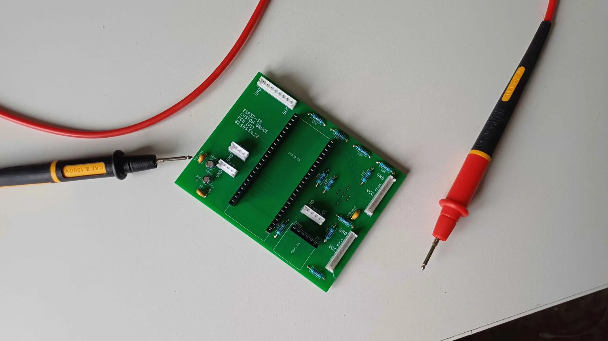
03 / Electrical checks04 / Modules connected05 / nRF24 diagnostics06 / Battery added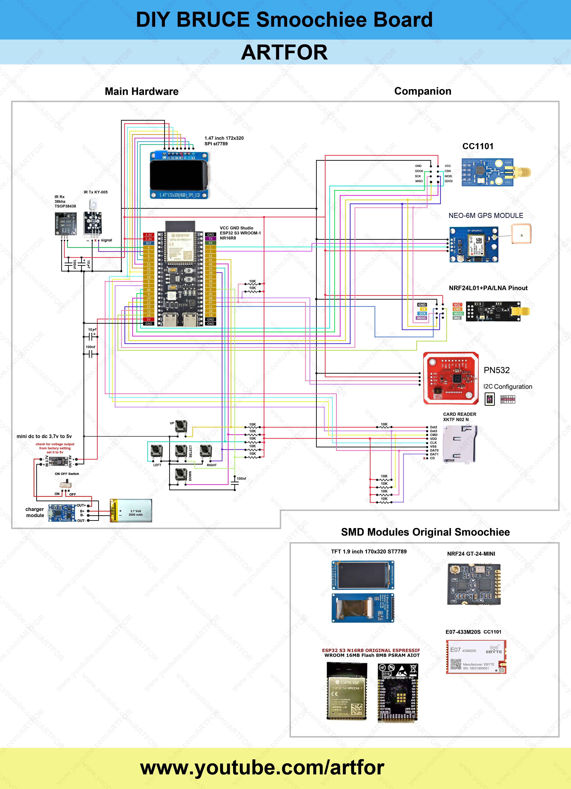
Reference for the intended peripheral wiring and modular hardware layout.
05 / LIVE INFRASTRUCTURE
A live-facing view of selected self-hosted services. Telemetry is read-only and intentionally limited to public service status — operational administration remains private.
Build and Rescue / Multiplayer environment
Luna Multiplayer / Shared spaceflight sandbox
AUTOMATION / WEBHOOK SYSTEMS
A connected webhook setup keeps server activity visible and turns important events into useful notifications and actions — from routine player updates to unexpected downtime and security events.
Automated status updates with current player counts, so server activity is easy to check at a glance.
STATUS · PLAYER COUNTSRecorded player activity gives a longer-term view of server usage, not just a snapshot of who is online now.
ACTIVITY · HISTORICAL DATAAutomated checks detect when a monitored server goes down and send an alert so the issue is not missed.
HEALTH CHECKS · ALERTSImportant security-related events can be surfaced through notifications, helping make infrastructure activity more observable.
SECURITY EVENTS · NOTIFICATIONSWebhook-connected automation supports server reset operations as part of the wider management workflow.
REMOTE OPERATIONS · AUTOMATIONThe system is built to grow — connecting additional events, services and custom workflows as new requirements come up.
CUSTOM EVENTS · INTEGRATIONSBEHIND THE STATUS LIGHTS / INFRASTRUCTURE PRACTICE
Infrastructure is treated as a complete system: hosting, web delivery, service processes, monitoring, automation, access control and recovery. The goal is not simply to launch a service, but to understand how it behaves and make it observable.
The current environment includes an Ubuntu VPS, Apache-hosted websites, Python monitoring processes, game-server services, Git-based updates and defensive server hardening.
INTEGRATIONS / BUILT TO CONNECT
Webhooks are already used across my own infrastructure for server status, player counts and history, downtime detection, security alerts and server resets. The same approach can connect APIs, websites, game servers and Discord — turning events into clear notifications, useful dashboards and automated workflows. Have a system that needs connecting? Let's explore what can be built.
Explore integration services ↗06 / THE STUDIO
Sky_Hex is my independent engineering and technology project hub, built around learning through practical work.
I work across electronics, computing, aviation, networking, software and infrastructure. The aim is to understand how things work by designing, building, operating, testing and improving them — then documenting the process honestly.
This is a growing collection of hands-on work, documented as an independent engineering portfolio. Projects are labelled accurately: complete, ongoing or at concept stage.

 COMMUNITY / PARTNER NETWORK
COMMUNITY / PARTNER NETWORKBEYOND THE WORKBENCH
Sky_Hex is also connected to Aviators Chasing Team, an aviation-themed storm-chasing community. The community brings enthusiasts together, shares experiences and provides access to multiplayer game servers and events.
HAVE SOMETHING INTERESTING IN MIND?